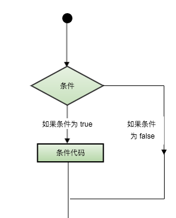

原文连接:https://www.cnblogs.com/javayihao/p/11906234.html
1.顺序结构
程序从上到下执行
2.选择结构(判断结构)
判断结构要求程序员指定一个或多个要评估或测试的条件，以及条件为真时要执行的语句（必需的）和条件为假时要执行的语句（可选的）。

C++ 编程语言提供了以下类型的判断语句
| 语句 | 描述 |
|---|---|
| if语句 | 一个 if 语句 由一个布尔表达式后跟一个或多个语句组成。 |
| if-else语句 | 一个 if 语句 后可跟一个可选的 else 语句，else 语句在布尔表达式为假时执行。 |
| 嵌套if语句 | 您可以在一个 if 或 else if 语句内使用另一个 if 或 else if 语句。 |
| switch语句 | 一个 switch 语句允许测试一个变量等于多个值时的情况。 |
| 嵌套switch语句 | 您可以在一个 switch 语句内使用另一个 switch 语句。 |
if语句
C++ 中 if 语句的语法：
if(boolean_expression)
{
// 如果布尔表达式为真将执行的语句
}
如果布尔表达式为 true，则 if 语句内的代码块将被执行。如果布尔表达式为 false，则 if 语句结束后的第一组代码（闭括号后）将被执行。
C 语言把任何非零和非空的值假定为 true，把零或 null 假定为 false。
int main() {
int a=30;
if (a<20)
{
cout << a;
}
cout << 20;
return 0;
}if-else语句
一个 if 语句 后可跟一个可选的 else 语句，else 语句在布尔表达式为假时执行。
C++ 中 if...else 语句的语法：
if(boolean_expression)
{
// 如果布尔表达式为真将执行的语句
}
else
{
// 如果布尔表达式为假将执行的语句
}
如果布尔表达式为 true，则执行 if 块内的代码。如果布尔表达式为 false，则执行 else 块内的代码。
嵌套if语句
在 C++ 中，嵌套 if-else 语句是合法的，这意味着您可以在一个 if 或 else if 语句内使用另一个 if 或 else if 语句。
C++ 中 嵌套 if 语句的语法：
if( boolean_expression 1)
{
// 当布尔表达式 1 为真时执行
if(boolean_expression 2)
{
// 当布尔表达式 2 为真时执行
}
}
您可以嵌套 else if...else，方式与嵌套 if 语句相似。
switch语句
一个 switch 语句允许测试一个变量等于多个值时的情况。每个值称为一个 case，且被测试的变量会对每个 switch case 进行检查。
C++ 中 switch 语句的语法：
switch(expression){ case constant-expression : statement(s); break; // 可选的 case constant-expression : statement(s); break; // 可选的 // 您可以有任意数量的 case 语句 default : // 可选的 statement(s); }
switch 语句必须遵循下面的规则：
- switch 语句中的 expression 必须是一个整型或枚举类型，或者是一个 class 类型，其中 class 有一个单一的转换函数将其转换为整型或枚举类型。
- 在一个 switch 中可以有任意数量的 case 语句。每个 case 后跟一个要比较的值和一个冒号。
- case 的 constant-expression 必须与 switch 中的变量具有相同的数据类型，且必须是一个常量或字面量。
- 当被测试的变量等于 case 中的常量时，case 后跟的语句将被执行，直到遇到 break 语句为止。
- 当遇到 break 语句时，switch 终止，控制流将跳转到 switch 语句后的下一行。
- 不是每一个 case 都需要包含 break。如果 case 语句不包含 break，控制流将会 继续 后续的 case，直到遇到 break 为止。
- 一个 switch 语句可以有一个可选的 default case，出现在 switch 的结尾。default case 可用于在上面所有 case 都不为真时执行一个任务。default case 中的 break 语句不是必需的。
嵌套switch语句
可以把一个 switch 作为一个外部 switch 的语句序列的一部分，即可以在一个 switch 语句内使用另一个 switch 语句。即使内部和外部 switch 的 case 常量包含共同的值，也没有矛盾。
C++ 中的 switch 语句允许至少 256 个嵌套层次。
C++ 中 嵌套 switch 语句的语法：
switch(ch1) {
case 'A':
cout << "这个 A 是外部 switch 的一部分";
switch(ch2) {
case 'A':
cout << "这个 A 是内部 switch 的一部分";
break;
case 'B': // 内部 B case 代码
}
break;
case 'B': // 外部 B case 代码
}
注意：? : 运算符
我们已经在前面的章节中讲解了条件运算符?:，可以用来替代 if...else 语句。它的一般形式如下：
Exp1 ? Exp2 : Exp3;
其中，Exp1、Exp2 和 Exp3 是表达式。请注意，冒号的使用和位置。
? 表达式的值是由 Exp1 决定的。如果 Exp1 为真，则计算 Exp2 的值，结果即为整个 ? 表达式的值。如果 Exp1 为假，则计算 Exp3 的值，结果即为整个 ? 表达式的值。
3.循环结构
有的时候，可能需要多次执行同一块代码。一般情况下，语句是顺序执行的：函数中的第一个语句先执行，接着是第二个语句，依此类推。编程语言提供了允许更为复杂的执行路径的多种控制结构。循环语句允许我们多次执行一个语句或语句组，下面是大多数编程语言中循环语句的一般形式：
循环类型。
| 循环类型 | 描述 |
|---|---|
| while循环 | 当给定条件为真时，重复语句或语句组。它会在执行循环主体之前测试条件。 |
| for循环 | 多次执行一个语句序列，简化管理循环变量的代码。 |
| do-while循环 | 除了它是在循环主体结尾测试条件外，其他与 while 语句类似。 |
| 嵌套循环 | 您可以在 while、for 或 do..while 循环内使用一个或多个循环。 |
while循环
只要给定的条件为真，while 循环语句会重复执行一个目标语句。
C++ 中 while 循环的语法：
while(condition)
{
statement(s);
}
在这里，statement(s) 可以是一个单独的语句，也可以是几个语句组成的代码块。condition 可以是任意的表达式，当为任意非零值时都为真。当条件为真时执行循环。当条件为假时，程序流将继续执行紧接着循环的下一条语句。
for循环
for 循环允许您编写一个执行特定次数的循环的重复控制结构。
C++ 中 for 循环的语法：
for ( init; condition; increment )
{
statement(s);
}
下面是 for 循环的控制流：
- init 会首先被执行，且只会执行一次。这一步允许您声明并初始化任何循环控制变量。您也可以不在这里写任何语句，只要有一个分号出现即可。
- 接下来，会判断 condition。如果为真，则执行循环主体。如果为假，则不执行循环主体，且控制流会跳转到紧接着 for 循环的下一条语句。
- 在执行完 for 循环主体后，控制流会跳回上面的 increment 语句。该语句允许您更新循环控制变量。该语句可以留空，只要在条件后有一个分号出现即可。
- 条件再次被判断。如果为真，则执行循环，这个过程会不断重复（循环主体，然后增加步值，再然后重新判断条件）。在条件变为假时，for 循环终止。
基于范围的for循环(C++11)
for 语句允许简单的范围迭代：
上面for述句的第一部分定义被用来做范围迭代的变量，就像被声明在一般for循环的变量一样，其作用域仅只于循环的范围。而在":"之后的第二区块，代表将被迭代的范围。
实例
上面的程序使用Range for语句遍历一个字符串，并将所有字符全部变为大写，然后输出结果为：
SOME STRING
do-while循环
不像 for 和 while 循环，它们是在循环头部测试循环条件。do...while 循环是在循环的尾部检查它的条件。
do...while 循环与 while 循环类似，但是 do...while 循环会确保至少执行一次循环。
C++ 中 do...while 循环的语法：
do
{
statement(s);
}while( condition );
请注意，条件表达式出现在循环的尾部，所以循环中的 statement(s) 会在条件被测试之前至少执行一次。
如果条件为真，控制流会跳转回上面的 do，然后重新执行循环中的 statement(s)。这个过程会不断重复，直到给定条件变为假为止。
a 的值： 10 a 的值： 11 a 的值： 12 a 的值： 13 a 的值： 14 a 的值： 15 a 的值： 16 a 的值： 17 a 的值： 18 a 的值： 19
嵌套循环
一个循环内可以嵌套另一个循环。C++ 允许至少 256 个嵌套层次。
C++ 中 嵌套 for 循环 语句的语法：
for ( init; condition; increment ) { for ( init; condition; increment ) { statement(s); } statement(s); // 可以放置更多的语句 }
C++ 中 嵌套 while 循环 语句的语法：
while(condition) { while(condition) { statement(s); } statement(s); // 可以放置更多的语句 }
C++ 中 嵌套 do...while 循环 语句的语法：
do { statement(s); // 可以放置更多的语句 do { statement(s); }while( condition ); }while( condition );
关于嵌套循环有一点值得注意，可以在任何类型的循环内嵌套其他任何类型的循环。比如，一个 for 循环可以嵌套在一个 while 循环内，反之亦然。
循环控制语句
循环控制语句更改执行的正常序列。当执行离开一个范围时，所有在该范围中创建的自动对象都会被销毁。
C++ 提供了下列的控制语句。点击链接查看每个语句的细节。
| 控制语句 | 描述 |
|---|---|
| break语句 | 终止 loop 或 switch 语句，程序流将继续执行紧接着 loop 或 switch 的下一条语句。 |
| continue语句 | 引起循环跳过主体的剩余部分，立即重新开始测试条件。 |
| goto语句 | 将控制转移到被标记的语句。但是不建议在程序中使用 goto 语句。 |
break语句
C++ 中 break 语句有以下两种用法：
- 当 break 语句出现在一个循环内时，循环会立即终止，且程序流将继续执行紧接着循环的下一条语句。
- 它可用于终止 switch 语句中的一个 case。
如果您使用的是嵌套循环（即一个循环内嵌套另一个循环），break 语句会停止执行最内层的循环，然后开始执行该块之后的下一行代码。
continue语句
C++ 中的 continue 语句有点像 break 语句。但它不是强迫终止，continue 会跳过当前循环中的代码，强迫开始下一次循环。
对于 for 循环，continue 语句会导致执行条件测试和循环增量部分。对于 while 和 do...while 循环，continue 语句会导致程序控制回到条件测试上。
语法
C++ 中 continue 语句的语法：
——C++流程结构5.png)
goto语句
goto 语句允许把控制无条件转移到同一函数内的被标记的语句。
注意：在任何编程语言中，都不建议使用 goto 语句。因为它使得程序的控制流难以跟踪，使程序难以理解和难以修改。任何使用 goto 语句的程序可以改写成不需要使用 goto 语句的写法。
语法
C++ 中 goto 语句的语法：
goto label; .. . label: statement;
在这里，label 是识别被标记语句的标识符，可以是任何除 C++ 关键字以外的纯文本。标记语句可以是任何语句，放置在标识符和冒号（:）后边。
无限循环
如果条件永远不为假，则循环将变成无限循环。for 循环在传统意义上可用于实现无限循环。由于构成循环的三个表达式中任何一个都不是必需的，您可以将某些条件表达式留空来构成一个无限循环。
当条件表达式不存在时，它被假设为真。您也可以设置一个初始值和增量表达式，但是一般情况下，C++ 程序员偏向于使用 for(;;) 结构来表示一个无限循环。
注意：按 Ctrl + C 键终止一个无限循环。
——C++流程结构7.png)
扫描 关注公众号 java一号。更重要的是小猿愿成为你编程路上的一个朋友！
文章首发地址： www.javayihao.top
首发公众号： java一号